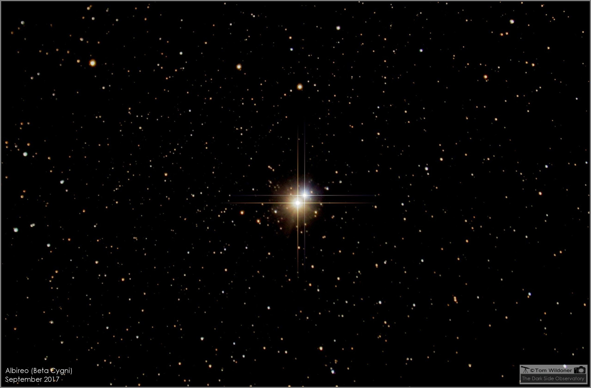
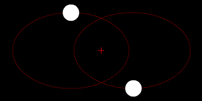

¿Que son las estrellas dobles?DefinicionHay estrellas que a simple vista aparecen como un único punto luminoso pero que, al mirarlas con telescopio, se ve que están formadas por dos o más estrellas cercanas entre sí. Son dobles (o binarias) si están formadas por dos, triples si son tres y, a partir de cuatro, se llaman en general múltiples Tipos de estrellas multiplesExisten varios tipos de sistemas estelares múltiples, que se pueden clasificar en función de la forma en que están organizados y la dinámica de sus órbitas |
 |
 |
Tipos de estrellas multiplesSistemas binariosSon aquellos que constan de dos estrellas que orbitan alrededor de un centro de masa común. Sistemas triplesEn este caso, tenemos tres estrellas que orbitan entre sí en patrones complejos. Sistemas Cuadruplesson sistemas con cuatro o más estrellas |